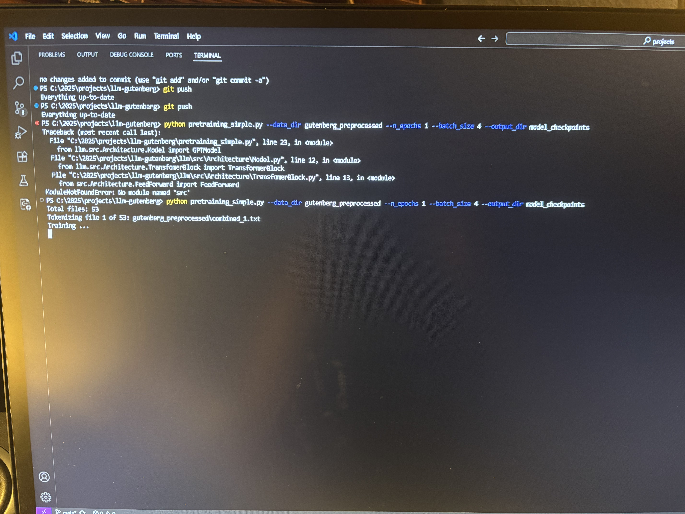

Today I started training my llm model on the giagantic 80GB dataset from Gutenberg. I'm training it on my thinkpad at home so that I can leave it on for a couple days (sorry mom, i hope this isn't a power issue). So, like I mentioned yesterday, I'm going to close up the project for now. Tomorrow, I will make the hugging face repository and use the chatbot template to show off it's functionalities. Here's a quick video showing off the preperation of the data, the process of converting combining numerous raw txt files into larger text files to assist in training.
Additionally, here's a little story. It took me a while to debug and tweak the training scripts from the gutenberg repo because it was made for mac. Because of this, by the time the file was bug free, I was so tempted to run the file and start training I didn't read the fine print. This is what the beginning of the process looked like:

Notice there are 53 files there. This would've taken 200 hours to complete, which is a little more than a week of training time! Not to mention I'm doing it on a very weak computer. I decided to do only do 2 files, which should take about 36 hours. But thank goodness I read the little note at the end or it would have been a loooong time. Even now as I type this, the script has been tokenizing for 30 minutes.